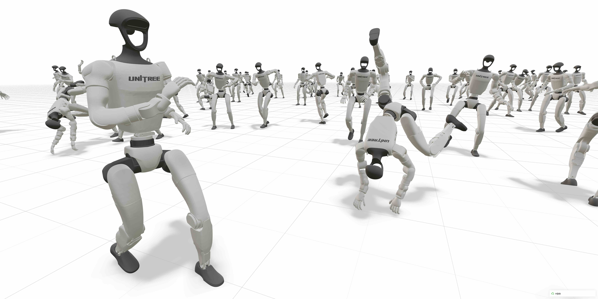

Welcome to mjlab!#
{kind=link}

mjlab is a lightweight, open-source framework for robot learning that combines GPU-accelerated simulation with composable environments and minimal setup friction. It adopts the manager-based API introduced by Isaac Lab, where users compose modular building blocks for observations, rewards, and events, and pairs it with MuJoCo Warp for GPU-accelerated physics. The result is a framework installable with a single command, requiring minimal dependencies, and providing direct access to native MuJoCo data structures.
Key features:
Composable environments: users define observations, rewards, terminations, and other MDP terms as modular building blocks
Minimal dependencies: single-command install via
uv, low startup latencyDirect MuJoCo data structures: native
MjModel/MjDataaccess with no translation layersPyTorch-native: observations, rewards, and actions are PyTorch tensors backed by zero-copy GPU memory sharing
For more on the design decisions behind mjlab, see Why mjlab?.
Try it now (no installation needed):
uvx --from mjlab --refresh demo
Table of Contents#
User Guide
The Manager Layer
Training & Debugging
API Reference
Further Reading
License & citation#
mjlab is licensed under the Apache License, Version 2.0. Please refer to the LICENSE file for details.
If you use mjlab in your research, we would appreciate a citation:
@article{Zakka_mjlab_A_Lightweight_2026,
author = {Zakka, Kevin and Liao, Qiayuan and Yi, Brent and Le Lay, Louis and Sreenath, Koushil and Abbeel, Pieter},
title = {{mjlab: A Lightweight Framework for GPU-Accelerated Robot Learning}},
url = {https://arxiv.org/abs/2601.22074},
year = {2026}
}
Acknowledgments#
mjlab would not exist without the excellent work of the Isaac Lab team, whose API design and abstractions mjlab builds upon.
Thanks also to the MuJoCo Warp team — especially Erik Frey and Taylor Howell — for answering our questions, giving helpful feedback, and implementing features based on our requests countless times.